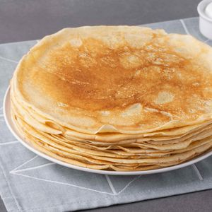

RECETTE DE BONNES CREPES MOUELLEUSES
Liste des ingrédients
5cl de rhum 1
50g de beurre fondue
2 cuillères à soupe d'huile
3 cuillères à soupe de sucre
300g de farines de ble
3 oeufs entiers
60cl de lait
Préparation
Étape 1
Mettre la farine dans une terrine et former un puits.
Étape 2
Y déposer les oeufs entiers, le sucre, l'huile et le beurre.
Étape 3
Mélanger délicatement avec un fouet en ajoutant au fur et à mesure le lait. La pâte ainsi obtenue doit avoir une consistance d'un liquide légèrement épais.
Étape 4
Parfumer de rhum.
Étape 5
Faire chauffer une poêle antiadhésive et la huiler très légèrement à l'aide d'un papier Essuie-tout. Y verser une louche de pâte, la répartir dans la poêle puis attendre qu'elle soit cuite d'un côté avant de la retourner. Cuire ainsi toutes les crêpes à feu doux.

Source